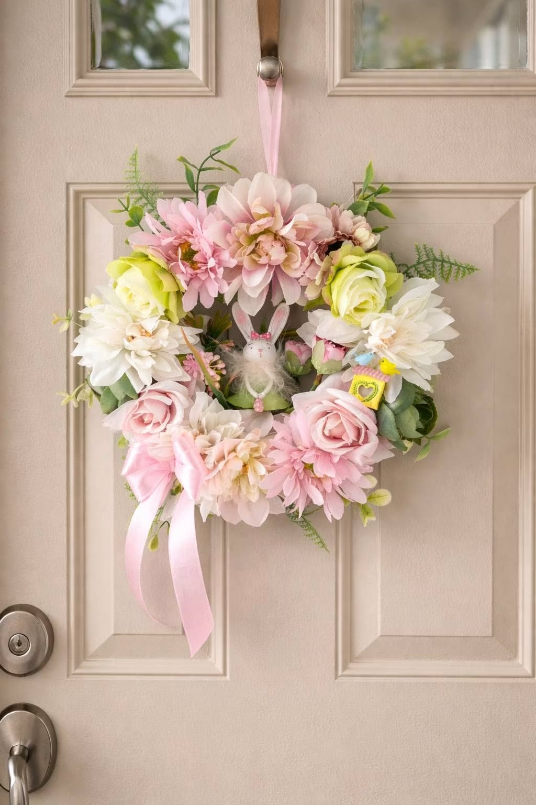
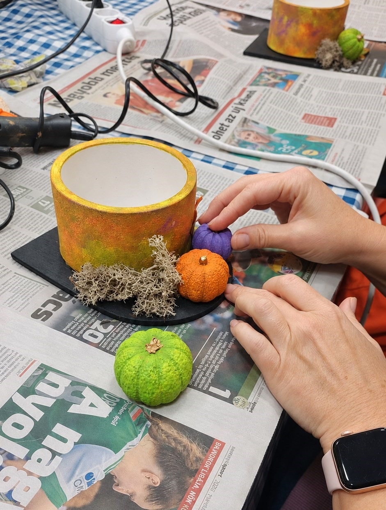

Csiriviri szolgáltatások
Kézműves díszek
Egyedi, szeretettel készült dekorációk és ajándékok különleges alkalmakra.
Az aktuális alkotásokat a Facebook-oldalamon találod. Ha valamelyik megtetszik, vagy saját ötleted van, írj nekem, és egyeztetjük a részleteket.
Megnézem a Facebook-kínálatot Egyedi érdeklődésKézműves díszek
Milyen alkalomra keresel valami különlegeset?

Esküvőre szeretnél emlékezetes pénzátadó ajándékot?

Születésnapra, névnapra vagy csak úgy ajándékoznál?

Ballagásra keresel maradandó csokrot?

Karácsonyi dekorációval tennéd meghittebbé az otthonodat?
Jó helyen jársz: szívesen segítek megtalálni az alkalomhoz és az elképzelésedhez illő díszt.
Kézműves díszek
Először a szeretteimnek alkottam
Évi vagyok. Eleinte a családomnak és a barátaimnak készítettem személyes ajándékokat. A biztatásukból nőtt ki a Csiriviri kézműves világa.
A különleges részleteket, a színeket és azt szeretem legjobban, amikor egy ajándék pontosan ahhoz illik, akinek készül.

Kézműves díszek
Van egy saját elképzelésed?
Írd meg, kinek készülne az ajándék, milyen alkalomra szánod, és milyen színeket, hangulatot képzeltél el. Ezek alapján megbeszéljük, mi valósítható meg és mennyi idő alatt.
Elmesélem az ötletemetKézműves díszek
Így rendelhetsz
Kiválasztasz vagy mesélsz
Megmutatod a Facebookon látott alkotást, vagy leírod a saját ötletedet.
Egyeztetjük a részleteket
Az árat, az elkészítés idejét és a kért megoldást.
Megbeszéljük az átvételt
A fizetést, a személyes átvételt vagy a szállítást.
Megérkezik az alkotás
Átveszed, vagy gondosan becsomagolva feladom.
Kézműves díszek
Árak, fizetés, csomagolás és szállítás
Ár és fizetés
Az árat minden dísznél előre egyeztetjük. Csomagküldésnél számla alapján, előre utalással lehet fizetni.
Átvétel és szállítás
Személyes átvétel Budapest XIX. kerületében, egyeztetéssel. Országos csomagküldés is kérhető; a módot és a díjat rendeléskor beszéljük meg.
Gondos csomagolás
Az alkotás biztonságos csomagolást kap. Amikor lehet, újrahasznosított dobozt és anyagokat használok.
Kézműves díszek
Alkossunk együtt a LakásMűhelyben!
Budapest XIX. kerületében időnként közös kézműves foglalkozásokat tartok. Az aktuális témákat és időpontokat a Facebook-oldalon hirdetem meg. Saját csoporttal vagy egyedi alkalommal is kereshetsz.
Aktuális alkalmak a Facebookon Érdeklődöm a műhelyrőlKézműves díszek
Friss alkotások és műhelypillanatok
Az aktuális díszeket és a következő műhelyalkalmakat a Facebook-oldalon találod.


Rólam mondtátok
Visszajelzések
Gyakori kérdések
Gyakori kérdések
Honnan tudom, hogy egy dísz még elérhető-e?
A Facebook-bejegyzésnél jelzem, ha elkelt; az aktuális elérhetőségről üzenetben érdeklődj.
Kérhetek saját elképzelés alapján készülő ajándékot?
Igen. Írd meg az alkalmat, a színeket és az elképzelésedet.
Elkelt alkotásból készülhet újabb?
Ez az adott darabtól függ; a lehetőségeket egyeztetjük.
Hogyan történik a fizetés és a szállítás?
Csomagküldésnél előre utalás és számla alapján. A szállítás módját és díját rendeléskor egyeztetjük.
Hol vehetem át személyesen?
Budapest XIX. kerületében, előzetes egyeztetéssel.
Hol találom a következő műhelyfoglalkozást?
Az aktuális alkalmakat a Facebook-oldalon hirdetem meg.
Kapcsolat
Meséld el, milyen alkotást szeretnél!
Írd meg, melyik dísz érdekel, vagy mesélj a saját ötletedről. A Facebookon látott alkotáshoz Messengeren is írhatsz.